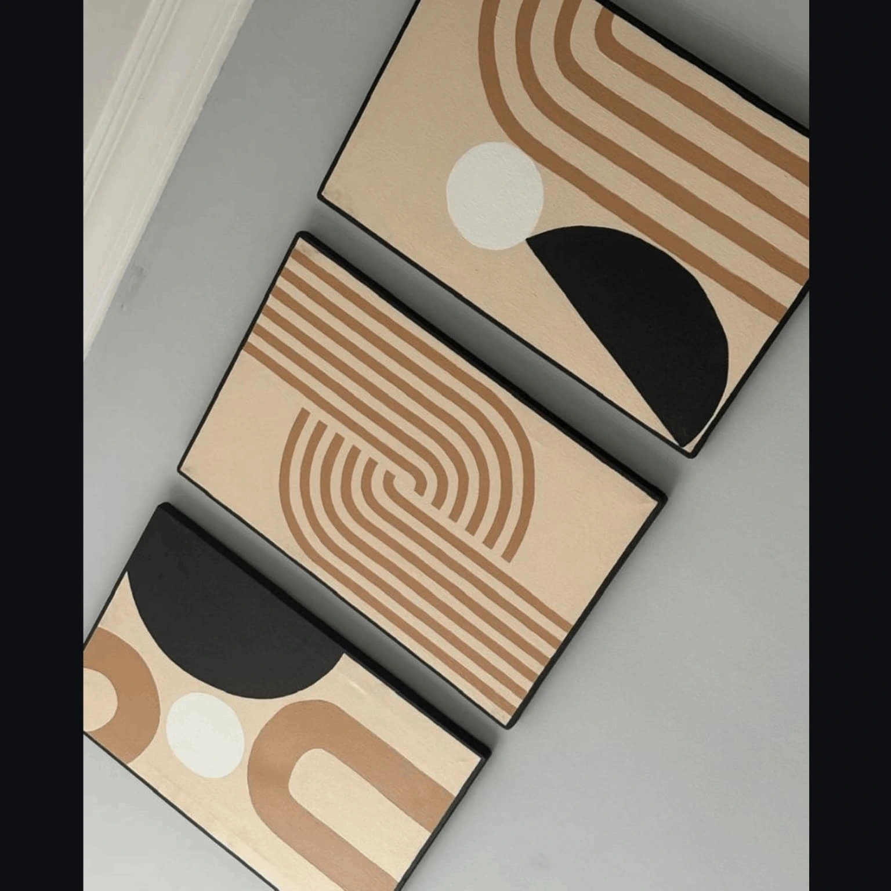
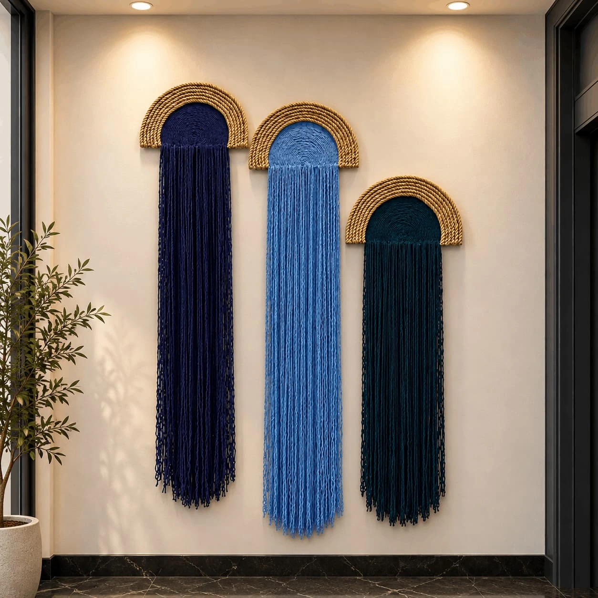

Qacha Crafts was founded by Eden Nigussie and Abel Getaneh out of a shared love for creativity and handmade art.
Using natural materials like jute rope, canvas, and acrylic paints, we create unique crafts and décor with care and attention to detail.
Every piece reflects our creativity and the passion we put into our work.


At Qacha Crafts, we transform simple materials into unique handmade art and décor. From jute rope crafts and wall art to canvas paintings,
personalized décor, and gifts,
each piece brings warmth, character, and a personal touch to your space.